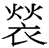
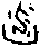
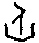
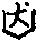
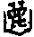
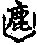
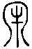
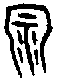

29 坎卦 坎為水
習坎，有孚，維心亨，行有尚。初六，習坎，入于坎窞，凶。九二，坎，有險，求小得。六三，來之坎坎，險且枕，入于坎窞，勿用。六四，樽酒，簋貳，用缶，納約自牖，終无咎。九五，坎不盈，祗既平，无咎。上六，係用徽纆，寘于叢棘，三歲不得，凶。
【卦名】
今本：坎 海昏：臽 帛書：贛 歸藏：犖 秦簡：勞 清華簡：
坎為古代獻祭人牲之用的大坑洞，因此取象為溝瀆，卦義為險。古卦名又作勞，取其勞動之義，亦可假借為牢，地牢的意思。
坎、陷、臽
坎與臽、陷、埳、欿通。《孫氏周易集解》引《釋文》：「本亦作埳，京劉作欿。」漢石經作欿。
坎為坑洞的意思，而且是上古獻牲之用的大坑洞，也就是祭祀坑。因此坎是代表凶險的卦，《周易》中也都解釋作危險。
《說卦傳》：「坎，陷也。」《序卦》：「物不可以終過，故受之以坎，坎者陷也。」坎為陷，陷阱的陷。《說文》：「坎，陷也。從土欠聲。」段注：「陷者，高下也。高下者，高而入於下也。因謂阱謂坎。〈井部〉曰：阱者，大陷也。〈穴部〉曰：窞，坎中更有坎也。《易》曰：坎，陷也。習坎，重險也。《毛詩傳》曰：坎坎，擊鼓聲。按：此謂坎坎為竷竷之叚借字也。」
坎同陷，依段注，坎、陷是指非常深的坑洞。陷甲骨文作（臽），上為人，下臼為凵坑中有落土，此為陷人的人牲之祭。
于省吾認為，坎古字原為（凵），是拿人或獸來做祭祀的大坑洞，以人牲做祭則寫作或，有時會加上落土作。以狗則作，這也是臽、陷的初文。《甲骨文字釋林．釋  》：
甲骨文从各種獸形从的字常見。《說文》作凵，並謂：「凵，張口也，象形。」朱駿聲《說文通訓》定聲謂：「一說坎也，塹也，象地穿。」按朱說甚是。古文字象坑坎形，小篆譌作凵，下橫平，故《說文》誤訓為張口。字典籍通作坎，為本字，坎為借字。《說文》：「坎，陷也，从土欠聲。」坎陷疊韻，以音為訓。章炳麟文始謂「凵又孳乳為坎」，「在本部則變易為臽」，「為陷」。按典籍坎字也通作欿或埳，易坎《釋文》謂：「坎，京、劉本作欿。」《爾雅．釋言》《釋文》謂「坎本作埳」。《一切經音義》三謂「埳亦坑也」。典籍以坎代凵，凵坎和陷欿埳等字又由于音近而通用。
…
甲骨文臽作、（从ㄗ與从人同）、等形，象陷人于坑坎之中，其字从人，亦聲，係會意兼形字。甲骨文的「今日」（乙八七一六），是指陷人以祭言之。此外，關于田獵陷獸，陷犬作。至于甲骨文中从各種獸形从的字，其中往往加以數點，則象坑坎中塵土之形。……基于上述，則甲骨文陷人以祭的字即臽的初文，从臼臽乃後起字，从阜的陷，又係臽的後起字。後世不僅陷行而臽廢，并且甲骨文从各種獸形从的幾个古文陷字，也都廢而不用。
坎原本為上古作為獻牲的祭祀坑，本字為凵，因此代表的是凶象自是不言而喻。臽或陷則是將人牲丟進凵中。
帛書坎作贛，贛與竷形近，假借為竷。竷亦通坎。《說文》：「竷，繇也舞也。樂有章。」《詩經》中，坎多數作敲擊之聲，如「坎坎伐檀兮」、「坎坎伐輻兮」、「坎坎伐輪兮」、「坎其擊鼓」、「坎其擊缶」。此段玉裁所說：「《毛詩傳》曰：坎坎，擊鼓聲。按：此謂坎坎為竷竷之叚借字也。」
而《禮記》裡，坎則有用作墓穴的，通壙。如「其坎深不至於泉」，言其墓穴深不可以達到地下之泉水。「既葬而封，廣輪揜坎，其高可隱也」，講墓葬之後以封土覆蓋，大小範圍剛好可掩蓋墓穴，高度剛好足以隱藏。「四十者待盈坎」則是指去幫忙葬禮的，四十歲以內的人要等到棺木安放到墓穴，並以土填滿墓穴之後才可離去。
在《易經》中坎引申為危險的意思，《彖傳》：「習坎，重險也。」坎的取象，又可為河川，溝瀆，也都是自凵的凹下地形引申而來。凡成凵之坎塹形勢者，皆可取象為坎。
勞、犖、
馬國翰輯本歸藏坎卦作「犖」，王家台秦簡作「勞」，清華簡作。《說文》：「犖，駁牛也。」段注：「馬色不純曰駁。」犖本意為顏色不純的牛，這類牛通常被用於耕田拉車等苦力，故引申為勞，通勞。李過：「謂坎為犖，犖者勞也，以為萬物勞乎坎也。」黃宗炎：「坎為勞卦，故從勞諧聲而省。物莫勞于牛，故從牛。」《説卦》：「坎者，水也，正北方之卦也，勞卦也，萬物之所歸也，故曰勞乎坎。」坎為勞卦，歸藏易卦名與《說卦傳》說法相符。而漢易中一直將坎取象為勞卦，其來有自。
清華簡《筮法．卦位圖》：「南方也，火也，赤色也。」「奚古胃之，司壴，是古胃之。」應該是勞的異體字。勞字甲骨文下從衣，至金文則下或從心，或從力。現今之後天八卦圖以坎為北，清華簡以為南。可能有兩個原因，一是清華簡正處五行與八卦思想結合的初期，以勞（坎）為火，羅（離）為水，後來發展成熟之後改為以離為火，坎為水。二，這是以農時的時序所安排，夏季為勞動、種植之季節，因此勞卦在南方。
依聞一多，勞假借為牢，監牢的意思，坎窞則是窖牢。《周易義證類纂》：「古者拘人或拘牲畜同處，故繫牲之圈曰牢，繫人之獄亦曰牢。卜辭牢作若。以泉作推知，牢本鑿地為之，如今之地窖。…習坎即入牢獄，故曰占凶。」
總言之，勞為勞動、辛勞的意思，但亦可假借為牢。牢本義為古代圈養備用之牲，後來引申為監牢，牢籠。坎卦亦有此義。
【卦義】
嚴密的牢籠，重重的危險，習慣於危險。
三畫卦的坎卦，因陽爻坎陷，被兩陰爻所包圍而沒有出路，所以稱坎。坎原為敬獻犧牲之用的祭祀坑，也有囚牢之義。卦象為危險，這也是自漢易之後主流的取象。
在六畫卦中坎卦也稱「習坎」，八純卦中沒有以重卦卦象為卦名的，因此有易學家認為「習坎」可能是易傳或經文混淆為卦名，卦名應該是「坎」才是。如郭京，和楊萬里都持此看法，認為「習坎」是經文。
《說文》：「習，數飛也。」習字原為鳥不斷習飛，現今做為練習、學習，習慣等。「習坎」的習字則有兩種意思：一是重覆，意指兩個坎卦重疊的卦象，也就是內外都是坎險。二是習慣，內外皆是險，因此而習慣於危險，在危險中求亨通。所以習坎就是上下內外都是坎，從此險到彼險，但能通於內外，可以遊走並習慣於危險之中，險中求通。
《序卦》說：「物不可以終過，故受之以坎。坎者，陷也。」大過為陽氣過盛，因此必需對陽氣有所限制，坎卦就是將陽爻坎陷，制約「陽過」的一卦。
三畫卦的坎代表著危險，六十四卦中凡有坎者幾乎都帶有危險的意味：如屯卦，因有險而取其「難」義；蹇卦因前有坎險而停止不前；困卦也是因為內有水險，而取其窮困之義。而習坎卦是有雙重的危險。
解釋坎卦要特別注意的是，卦辭及爻辭中有亨，有「小有得」等像是吉的占語，但並非真的意謂沒有危險，或是脫離危險。實際上都是險中求通，所以卦辭説「維心亨」。「維心亨」道出了坎卦的本質：既然內外皆危險，進退都是坎，那不如把他看開。坎卦之亨通，都是屬於心理及修為層次的問題，而不是求卦者在現實上真的脫離危險而事情亨通。
就六爻情節來看，坎卦之典故，應該有幾種可能。一是古代之墓穴，二是以坎為監牢。坎卦六爻多數談的是人被關於嚴密的監牢裡，如初六為地牢的最深最嚴密之處，不見天日。九二與九三為坎中之生活，只能求得手枕充作安歇之物，六四為監獄中終於可見一扇窗，並與外界連絡通訊。上六則是被囚於圜土，圜土即古之監獄。九五講的可能是古代墓葬之事。
就吉凶而言，坎卦為維心亨之一卦，六爻符合維心亨者為九二和九五，此九二之求小得，九五之無咎。初由於入坎最深，因此為凶。六為坎極，因此為三歲不得而凶。
習坎，有孚，維心亨，行有尚。
- 彖曰：習坎，重險也。水流而不盈，行險而不失其信。維心亨，乃以剛中也；行有尚，往有功也。天險不可升也，地險山川丘陵也，王公設險以守其國，險之時用大矣哉。
- 象曰：水洊至，習坎。君子以常德行，習教事。
【今解】
雙重的坎險，有信念而能維持內心的亨通。出行前往，能夠得到獎賞。
處於內外都是坎陷，前後上下都是危險的時候，能夠求通者只有內心的改變，所以說「維心亨」。「行有尚」是說積極行動能夠有所得。但處坎之時，只可能是小小的獲得，不會是大成就。
總體來說，遇到坎卦不能大吉，雖然內外都是坎險，只要保持樂觀的態度，並積極去行動，還是能夠小有收獲，小有作為的。
【字義】
習坎：說明二體坎象。八經卦中唯有坎卦加一「習」字，許多學者因此懷疑習為贅字。習原本指的是鳥在學飛而不斷嘗試，在此為「重覆」的意思，意謂兩坎重疊，《彖傳》說的：「習坎，重險也。」虞翻注曰：「兩象也，天險地險，故曰重險也。」上有天險下有地險，兩險重疊即重險。二是習指習慣，習坎為習慣於危險。若以坎為牢，那麼習坎可解釋為雙重的牢籠，意指監牢相當嚴密。孔穎達：「習有二義：一者習重也，謂上下俱坎，是重疊有險，險之重疊，乃成險之用也。二者人之行險，先須便習其事，乃可得通，故云習也。」
有孚：有信念。孚為信的意思。孚另一解釋為俘，俘虜。虞翻：「水行往來，朝宗于海，不失其時，如月行天，故習坎為孚也。」
維心亨：維持內心的亨通。維，維持、維繫，保持，保有的意思。虞翻以乾坤兩卦的陰陽交換來解釋：「坎為心。乾二五旁行流坤，陰陽會合，故亨也。」朱熹：「以剛在中，心亨之象。如是而往，必有功也。 」
行有尚：前往將會有獎賞。尚，賞，獎賞之意。
水洊至：洊，音漸，同荐，再的意思。坎為水再至之象。王弼：「重險縣絕，故水洊至也。」陸績：「洊，再。習，重也。水再至而益，通流不舍晝夜。重習相隨以為常，有似於習，故君子象之。」
常德行，習教事：王弼：「習於坎，然後乃能不以險難為困，而德行不失常也。故則夫習坎，以常德行而習教事也。」
初六，習坎，入于坎窞，凶。
象曰：習坎入坎，失道凶也。
【今解】
雙重的坎險，落入很深的坎陷裡，凶。
此處的坎或指地牢、監獄，所言為被關入地牢的最深之處，監護最為嚴密而難有出脫之時。
初六在習坎的最下方，就時間來說，是習坎最開始的時候，不能習於坎者。就空間來說，則是坎險最深最難之處，處境暗無天日。以柔處剛，不當位，是危險中之危險，凶。
坎窞為古代之地牢或獻祭人牲用的祭祀坑，初爻為一卦的最下方，也是坎陷的最深處，為最難出脫之地。又初六動下體成兌，兌為毀折，靜為坎險，動靜皆凶。
【字義】
入于坎窞：窞，音「但」，為坎中之坎，坎洞中的最深處。《象》曰：「習坎入坎，失道凶也。」習坎的時候，落入坎陷中，走不出來，言沒有脫離危險的機會，所以為凶。王肅：「窞，坎底也。」虞翻：「坎中小穴稱窞。」干寶：「窞，坎之深者也。」程頤：「窞，坎中之陷處。」《說文》：「坎中小坎也。从穴从臽，臽亦聲。易曰：入于坎窞。一曰旁入也。」段注：「坎中更有坎也，各本作坎中小坎。今依易《釋文》訂。」
九二，坎有險，求小得。
象曰：求小得，未出中也。
【今解】
坎洞中有手枕，雖沒有枕頭，但也算是小小的獲得。
「坎有險」傳統解釋為坎洞中有危險。九二居於下坎的中間，因此仍居於危險之中，此為坎有險。但因本性剛強又居中，具有陽剛而中庸的美德，是能夠自力救濟者，因此說求小得。雖能有小得，但仍居於危險的境地，也只是險中求通，並非化險為夷，也未脫離危險。
求小得，雖能夠險中求通，小事求之可有獲得，但大事不行。
【字義】
坎有險：當作「坎有檢」，檢為手枕，枕手之用。帛書作「贛有訦」，訦借為枕。《釋名》：「枕，檢也，所以檢項也。」坎中有枕，可以有較好的休息，即後文說的「小有得」的得。六三「險且枕」帛書作「噞且訦」，鄭玄作「檢且枕」，注曰：「木在手曰檢，木在首曰枕。」「檢」即枕手用的木頭，「枕」為做為枕頭用的木頭。「坎有檢」，坎中有手枕可充當枕頭。因此六三爻接著說「檢且枕」，以檢為枕。
六三，來之坎坎，險且枕。入于坎窞，勿用。
象曰：來之坎坎，終无功也。
【今解】
進退都是坎險，有手枕暫且充當枕頭。進入了坎險的最深處，凡事皆不可行。
此處的坎或指地牢、監獄，所言為被關入地牢的最深之處，監護最為嚴密而難有出脫之時。
六三失位乘剛，又處於兩個坎險交界之處，又是多凶的爻位，進退都是坎險，因此凡事都不可行。險且枕，以檢（手枕）為枕頭，要人安之若命之義。
【字義】
來之坎坎：由外到內為「來」，由內到外為「往」，「之」也是「往」的意思。來之坎坎，來是坎，往也是坎，進退都是坎。
險且枕：當作「檢且枕」，帛書作「噞且訦」，《釋文》：「古文及鄭向本作檢。」鄭玄作「檢且枕」，注曰：「木在手曰檢，木在首曰枕。」《釋名》：「枕，檢也，所以檢項也。」檢為擱手用的手枕，枕為讓人躺著用的枕頭。傳統解釋「險且枕」為危險中姑且求安，或危險而讓人不安。枕有兩種完全相反的解釋，一為「安」，一為「不安」。干寶：「枕，安也。」王弼：「枕者，枝而不安之謂也。」宋儒多依王弼，程頤：「枕謂支倚。居險而支倚以處，不安之甚也。」朱熹：「枕，倚著未安之意。」虞翻則解釋作停止：「枕，止也。」現代張立文等學者則主張為「沉」，下沉的沉。《釋文》：「九家作玷，古文作沉。」
入于坎窞：進入坎險的最深處。六三與初六都處下坎，陰柔而不當位，未能如九二之剛強獨立而維持心亨，因此兩爻皆曰入于坎窞。窞，音但，通陷、臽，為坎中之坎，坎洞的最深處。詳解請見初九。
六四，樽酒，簋貳，用缶，納約自牖，終无咎。
象曰：樽酒簋貳，剛柔際也。
【今解】
一樽酒，二盤食物，以及裝水的瓦罐，將如此簡約的飲食從窗戶送進牢房，最後無罪咎。
傳統認為這是在講祭祀祖先或是奉獻於王公的事，雖然東西簡單，但當危難之時，未失虔敬之心。然而觀坎卦之本義。坎卦講的應該是人被關入地牢之事，九四講的可能是親友帶著飲食來探監，所以飲食必需從窗戶遞進去。另一可能為人牲獻祭所用。
六四已脫離內部的危險，只要再渡過外部危險這一關就能夠出險，再加上承載九五之君，因此比較接近出險的機會。故曰「終無咎」。
因處外坎，已可見到外面的陽光，因此曰「牖」。相較之下，下卦三爻為處於內坎，不見天日。
【字義】
樽酒：樽，本作尊，酒器。樽酒，一樽酒。
樽酒簋貳用缶：有兩種讀法，一是依王弼，應讀作「樽酒，簋貳，用缶」。王弼：「雖復一樽之酒，二簋之食，瓦缶之器，納此至約，自進於牖，乃可羞之於王公，薦之於宗廟，故終无咎也。」但歷代儒者多數支持讀作「樽酒簋，貳用缶」，依《釋文》，舊讀樽酒簋絕句，貳用缶一句。朱熹：「晁氏云：先儒讀『樽酒簋』為一句，『貳用缶』為一句。今從之。」就《象傳》「樽酒簋貳，剛柔際也」來看應該是王弼比較正確。簋貳，二個盤子，兩盤子的祭品或食物。簋，音「鬼」，「簋貳」即損卦所說的「二簋可用享」。簋為盛黍稷的竹編盤子，通常以偶數為用，最少為二，兩個則成一副。所以簋貳就是一對盤子。這裡或指兩盤的食物。缶，音同「否定」的否。盛水用的瓦器，圓腹小口。
納約自牖：從窗戶將簡約的食物送進去。或者，從窗戶將約信送進去。納，送入。約簡約，通解認為是前述的簡約祭品。約或可解釋為約信。牖，音「有」，窗戶。崔憬：「於重險之時，居多懼之地，近三而得位，比五而承陽。修其絜誠，進其忠信，則雖祭祀省薄，明德惟馨。故曰樽酒簋貳用缶。納約，文王於紂時行此道，從羑里納約，卒免於難，故曰自牖，終无咎也。」于省吾認為約應假為勺，周時有牖下祭酒之俗，〈周易尚氏學序〉：「約為勺的借字，即酌酒之斗。《考工記》鄭注謂『勺、故書或作約』，是其證。《詩‧采蘋》：「於以奠之，宗室牖下」，是古奠祭於牖下之證。『納勺自牖』，是說祭時自牖納勺於樽以挹酒。」
九五，坎不盈，祗既平，无咎。
象曰：坎不盈，中未大也。
【今解】
坎洞並未填滿，小土丘已挖平，沒有罪咎。
坎險雖然還未完全渡過，但是曙光已現，沒有永遠的坎險。小土邱已平，比喻平安之日已近，故曰無咎。九五已近坎之尾，剛中而處互卦艮體之上，變而上體坎成坤，坤為平地，故曰「坻既平」。
此爻或言人古代葬禮的填坎（墓穴）過程，坎洞還未填滿，但小土坵已鏟平。
【字義】
坎不盈：坎通壙，墓穴。《禮記‧雜記》：「弔，非從主人也，四十者執綍。鄉人五十者從反哭，四十者待盈坎。」此段言，前往弔喪，不是跟在主人後面而已，而是要能夠幫忙做些喪禮的事，例如扶棺，還有下棺填土等事。四十歲以下的青壯人等，要幫忙拉抬棺的繩索。鄉人五十歲以上者，跟隨喪家回家哭喪，但四十歲以內的，年輕力盛，要留著等下好棺木，墓穴填滿之後才可以離去。孔穎達疏：「四十者待盈坎者，謂窆竟以土盈滿其坎，四十強壯，不得即反，故醋芰滿坎而反也。若非鄉人，則無問長少，皆從主人歸，優饒遠者。」傳統解釋為流水不盈，即《彖傳》講的「水流而不盈」。虞翻：「謂水流而不盈。」
祗既平：祗或作祇，音義解釋相當岐異，王弼認為是語助辭，程頤認為音義都與「抵」同，達到的意思。虞翻認為是平安的意思：「祇，安也。艮止坤安，故祇既平。得位正中，故无咎。」《說文》引作「禔旣平」，也是解釋為平安：「禔，安福也，从示是聲。《易》曰：禔旣平。」此依鄭玄注：「祗，當為坻，小邱也。」平安的意思應該來自「既平」。《釋文》：「祗，音支，又祈支反，京作視，古文同，音支，又上支反，安也。」依段玉裁說法，孟氏易皆作「禔既平」，並將禔解釋為安。段玉裁注《說文》「易曰禔旣平」：「《周易》坎九五祇旣平，《釋文》曰：祇、京作禔。按：許自序所偁易孟氏，京房受易焦延壽，延壽嘗從孟喜問易。虞翻自言臣高祖光、曾祖成、祖鳳、父歆、皆治孟氏易。至臣五世。翻注此爻云：祇，安也。然則孟易作禔訓安甚明。翻本作祇，謂祇卽禔之假借。與何人斯鄭箋正同。」
上六，係用徽纆，寘于叢棘，三歲不得，凶。
象曰：上六失道，凶三歲也。
【今解】
用繩子將人綑綁起來，囚禁在荊棘圍牆裡面。三年都無法出去，凶。
此近於困卦初六爻辭：「臀困于株木，入于幽谷，三歲不覿。」講的是古代圜土之事。圜土即古代的監獄，三歲不得即三年不得出。
【字義】
係用徽纆：用繩子綑綁起來。係，綑綁。徽纆，繩子。虞翻：「徽纆，黑索也。」徽解作「黑」，徽纆為黑色的繩子。劉表：「 徽纆索名，所以囚。」依《說文》，徽為三糾繩，纆為繩索。《說文》纆字段注：「劉表曰：三股曰徽，兩股曰纆。《字林》曰：兩合曰糾，三合曰纆。」徽是用三股所編成的繩子，而纆則是二股所編成。徽纆也就是兩種不同規格的繩子。這種繩子專門用來綁要囚禁的犯人。
寘于叢棘：把人囚禁起來。寘，音義同「置」，這裡引申為囚禁的意思。「寘于叢棘」就是把人囚禁在叢棘裡。叢棘，上古囚禁人犯的地方，外圍會種植一叢叢的荊棘當做圍牆，以避免犯人逃跑。虞翻：「坎多心，故叢棘。獄外種九棘，故稱叢棘。二變則五體剝，剝傷坤殺，故寘于叢棘也。不得，謂不得出獄。」李鼎祚引《周禮》〈朝士〉外朝：「左九棘，右九棘，面三槐，司寇公卿議獄其下。害人者，加明刑。任之以事。上罪三年舍，中罪二年而舍，下罪一年而舍也。」
三歲不得：三歲而無法被釋放出去。不得，即不得出，無法出去。鄭玄：「上六乘陽，有邪惡之罪，故縛以徽纆，置於叢棘，而使公卿以下議之，其害人者置之圜土，而施職事焉。以明刑恥之能復者。上罪三年而赦，中罪二年而赦，下罪一年而赦。不得者，不自思以得正道，終不自改而出諸圜土者殺。故凶。」《周禮》司圜：「掌收教罷民，凡害人者，弗使冠飾而加明刑焉，任之以事而收教之。能改者，上罪三年而舍，中罪二年而舍，下罪一年而舍。其不能改而出圜土者，殺。雖出，三年不齒。」圜土即古代專門管收「罷民」的地方。罷民即作惡多端，為害百姓者，罪刑嚴重者管收三年，其次為兩年，最輕者一年。如果能夠改過遷善，期滿就放出。如果無法教化，則殺。三歲不得，謂三年而無法教化而改過遷善，因此為凶。
【彖傳注】
習坎，重險也。水流而不盈，行險而不失其信。維心亨，乃以剛中也；行有尚，往有功也。天險不可升也，地險山川丘陵也，王公設險以守其國，險之時用大矣哉。
習坎，重險也：解釋卦名。習者鳥數飛，此處藉以描繪重坎之象，坎為險，因此說是重險。習又有習慣之義，因處於重坎而仍能心亨。
水流而不盈，行險而不失其信：以上下二體卦象解釋卦義。重坎即是水流而不盈滿之象。《易經》八純卦的上下二體都一樣，這樣的卦象都有「不止」的運行之義。所以乾卦《大象傳》說「天行健」，天行即描繪天體運行不止。坤卦《大象傳》說「地勢坤」，大地之綿延不絕。習坎乃水流不盈，行險而不止之義。陸績：「水性趨下，不盈溢崖岸也。月者水精，月在天，滿則虧，不盈溢之義也。」朱熹：「言內實而行有常也。」
維心亨，乃以剛中也：解釋經文「維心亨」，因為坎卦兩個陽爻都得中。
行有尚，往有功也：指九五。坎在外乃往有功之象，因九五中正而不陷，五多功。陽在坎中本是坎陷之象，但坎之險位在下，因此在下卦則九二為坎陷。若在上卦成九五，就不陷。如需《彖傳》：「利涉大川，往有功也。」蹇：「利見大人，往有功也。」
天險不可升也：上坎卦為天險，天險不可攀登踰越。升，登也。孔穎達：「言天之為險，懸邈高遠，不可升上，此天之險也。若其可升，不得保其威尊，故以不可升為險也。」
地險山川丘陵也：下坎卦為地險，地險則是山川丘陵之屬。
王公設險以守其國，險之時用大矣哉：此言坎險之時用，王公設置天險地險以守護他的國家。孔穎達：「言王公法象天地，固其城池，嚴其法令，以保守其國也。」
關於坎離兩卦如何由乾坤而來，李挺之卦變圖以陰陽上交下交而來。個人竊疑，這是乾坤兩卦的二五交易而來，乾二之坤五，乾五之坤二，成離與坎。虞翻：「乾二五之坤，與離旁通。」「坎為心。乾二五旁行流坤，陰陽會合，故亨也。」
數字卦
給三組數字，問卦
第一組➗8的餘數，是當上卦，還是下卦？
南懷瑾的書，傅佩榮的書，還有一些網站上的說法不一。
那位先進指點一下，否則差很大！
數字卦取卦方式？建議放到「討論區」中較好
閱讀此卦時，發現樓上這問題，
確實有許多不同的取卦說法，
建議原作者，不妨把此問題移至討論區中的易學討論較好。
放在坎卦下問，看到人可能不多。
“但是署光已現”中“署”當為“曙”。
“但是署光已現”中“署”當為“曙”。
"霸民" <=
"圜土即古代專門管收「罷民」的地方。霸民即作惡多端，為害百姓者" <=
“以勞（坎）為火，羅（離）為火”疑有誤。
“以勞（坎）為火，羅（離）為火”疑有誤。
虞翻：水行往來，朝宗於海，不失其時，如月行天，故習坎爲孚也。虞翻：「水行往來，朝宗於海，不失其時，如月行天，故習坎爲孚也。」
似有重複。